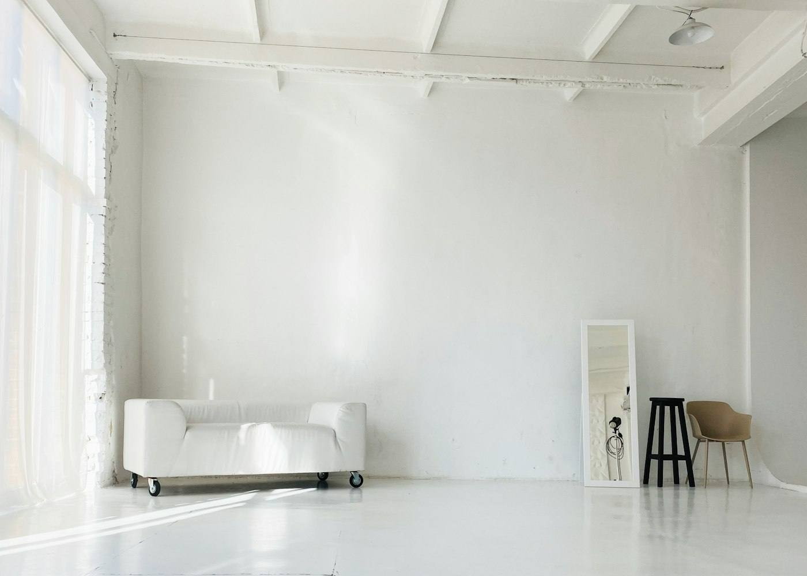

Perimenopause & menopause
A full symptom history, a full panel, and the plan written before you leave. Not “come back when the bloods are in”.
90 minPerimenopause, hormone health and the long slow business of prevention. First appointments run ninety minutes — the length it takes to hear a fifteen-year history once, properly.
A full symptom history, a full panel, and the plan written before you leave. Not “come back when the bloods are in”.
90 minFull panels, not TSH on its own. And if the numbers are genuinely normal, we will say so and start looking elsewhere rather than treating the chart.
60 minDEXA, lipids and pressure read together, once, by one person — with the ten-year line drawn on the page rather than left in the file.
60 minOne appointment a year that has read last year's. Doses adjusted, or deliberately left alone and you told which.
45 min
The same four steps, the same order, whichever clinician you see. Consistency is the point of a protocol.
Drawn and run before you are seen, so the appointment opens on results instead of speculation.
History, examination and results in one sitting. Long enough that you are not editing yourself for time.
The plan in writing before you leave — including what we have decided against, and why.
A short review to get the dose right. Included, because starting a treatment and not checking it is not treatment.
Our own figures, not a survey we commissioned. Where the evidence is genuinely thin — and in this field it often is — we say so rather than selling around the gap.
Patients seen since 2016
4 100Median wait for a first appointment
11 daysPatients still with us at three years
78%Consultations that end without a prescription
31%Endocrinology · Clinical lead
Fourteen years in NHS endocrinology before founding the practice. Sees the complex thyroid work.
Menopause medicine
Runs the perimenopause clinic. Writes the practice's prescribing guidance and keeps it public.
Biomedical scientist
Runs the on-site lab. Every panel is processed here, which is why results arrive before the appointment.
Bone health · Metabolic
Runs the DEXA clinic and the cardiovascular risk reviews. Publishes the practice's prescribing audit.
Menopause medicine
Second menopause clinic, Thursdays and Fridays. Trained in Lisbon and at the Royal Free.
Practice nurse · Phlebotomy
Takes most of the bloods and runs the six-week reviews. Usually the person who calls you back.
No membership, no packages, no minimum commitment. You pay for the appointment and the tests, and you know both numbers before you arrive.
First consultation — 90 minutes, includes the written plan
£320Six-week review — included with a first consultation
£0Follow-up or annual review — 45 minutes
£180Full hormone panel, processed in-house
£210Thyroid panel
£145DEXA scan, referred and reported
£190Prescriptions are charged at cost by the pharmacy, not by us — we take no margin on what we prescribe, which is the only way the advice can stay honest. If a test would not change what we do next, we will not run it.
First consultations run Tuesday to Friday. Bloods are taken forty minutes before, so arrive a little early.
14 Wren Street, London W1G
020 7000 0000
reception@wrenstreet.co.uk